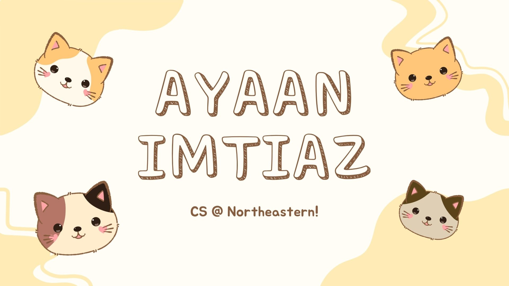

Welcome to My Website

Hello and welcome! My name is Ayaan and I am a CS student at Northeastern University currently studying computer science with a passion for technology and problem solving. Ever since I wrote my first line of code in high school, I have been fascinated by the challenges and satisfaction programming provides. Whether it is building a personal project, working through a leetcode problem, or learning a new framework, I find the process of creating things with code really rewarding.
Outside of academics, I am a huge fan of video games and tabletop RPGs. Games like Baldur's Gate 3 and Dungeons and Dragons have shaped the way I think about storytelling, decision-making, and creative problem solving. I also spend a lot of time on Roblox, where I enjoy both playing community-made experiences and tinkering with Roblox Studio to build my own worlds. The overlap between gaming and programming is what originally drew me to computer science in the first place.
I also love design. Although I aspire to be a back-end software engineer, I have a genuine appreciation for visual creativity. I enjoy using Figma and Canva to mock up ideas, whether it is a website layout, a game UI concept, or just a fun graphic for friends. I believe great software should look as good as it feels to use, and gaming has taught me a lot about what makes an interface intuitive and enjoyable.
This website serves as a personal space where I share a bit about who I am, what I am learning, and what excites me. Feel free to explore the different pages to learn more about my interests and hobbies, especially my love for gaming. I hope you enjoy your visit!
Contact Me
I would love to hear from you! Feel free to reach out through any of the links below.
Email: imtiazayaan869@gmail.com
GitHub: github.com/ayaanimtiaz
LinkedIn: My LinkedIn